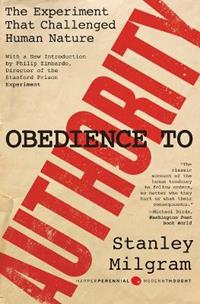
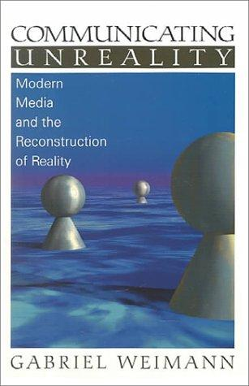
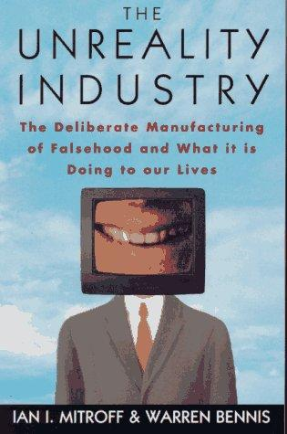
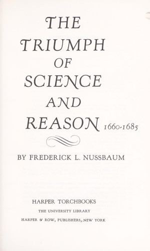

59:03 · 7 OPERE
Immagini dalla crisi.
Il filo del discorso
Il relatore propone una lettura critica delle immagini diffuse durante la prima fase della pandemia nel 2020. Il criterio iniziale è distinguere chi chiede fiducia personale da chi invita a controllare fonti e ragionamenti; il discorso attraversa poi fotografie sanitarie, il trasferimento delle salme da Bergamo, interventi di personaggi pubblici, rappresentazioni di operatori e manifestazioni tedesche. Il filo conduttore è l’effetto che titoli, didascalie, simboli e montaggio possono esercitare sulla percezione. Le valutazioni sulla costruzione di una propaganda coordinata appartengono al relatore: fotografie isolate, aspetto delle persone e somiglianze visive non ne dimostrano da soli l’esistenza. Il confronto con la mortalità da fumo va inoltre distinto dall’andamento temporale di un’epidemia e non ne smentisce la gravità. Nella seconda parte, l’esperimento di Milgram introduce l’obbedienza all’autorità; Weimann, Mitroff e Bennis offrono riferimenti alla ricostruzione mediatica della realtà. Manifesti della DDR e polemiche sulla carriera di Merkel conducono infine al rapporto fra scienza, ragione e potere. Il volume storico di Frederick L. Nussbaum e l’appello illuministico di Kant chiudono il percorso sul coraggio di usare il proprio intelletto. La scheda conserva il contesto del discorso e segnala dove restano da identificare immagini, articoli e citazioni, senza presentare ipotesi, accuse personali o generalizzazioni sanitarie come fatti accertati.
I libri nel discorso

1984
Identificazione probabile
Copertina: Newton Compton · edizione illustrativa
L’espressione polemica Covid 1984 apre il discorso; un cartello a 2117 s riprende esplicitamente gli slogan orwelliani.
Passaggio 0:31 ↗ · Fonti e libro ↗
I promessi sposi
Identificazione probabile
Copertina: BUR · 1998 · introduzione di Guido Bezzola
Immagine autentica dell’opera, controllata visivamente; l’edizione di riferimento non è attribuita al filmato.
Manzoni e il racconto della peste sono richiamati senza titolo; I promessi sposi è un riferimento probabile, distinto da un titolo pronunciato.
Passaggio 19:08 ↗ · Fonti e libro ↗
Obedience to Authority. An Experimental View
Identificazione probabile
Copertina: Harper Perennial Modern Classics · edizione inglese · 2009
Copertina autentica dell’edizione Harper Perennial con introduzione di Philip Zimbardo. Il rapporto con la lettura del video resta probabile: non conferma il volume o l’edizione consultati.
Citazione riconoscibile sulla possibilità che persone comuni diventino agenti di un processo distruttivo; titolo e pubblicazione precisa non pronunciati.
Passaggio 42:17 ↗ · Fonti e libro ↗
Communicating Unreality. Modern Media and the Reconstruction of Reality
Copertina: SAGE · edizione inglese · 1999/2000
Copertina autentica fornita da OpenLibrary, riscontrata con il titolo e l’autore nel catalogo SAGE. L’edizione del filmato non è identificata.
Titolo inglese e anno 2000 riconoscibili, seguito dal tema media e ricostruzione della realtà.
Passaggio 45:42 ↗ · Fonti e libro ↗
The Unreality Industry. The Deliberate Manufacturing of Falsehood and What It Is Doing to Our Lives
Copertina: Oxford University Press · edizione inglese · 1993
Copertina della ristampa Oxford University Press del 1993, disponibile per ISBN nel catalogo OpenLibrary. L’originale Birch Lane Press/Carol Publishing è del 1989; nessuna edizione attribuita al filmato.
Titolo e nomi Mitroff e Bennis riconoscibili nel richiamo al secondo volume sui media.
Passaggio 45:52 ↗ · Fonti e libro ↗
The Triumph of Science and Reason, 1660–1685
Frontespizio autentico, copertina esterna non reperita: Harper Torchbooks · The University Library · frontespizio della ristampa Harper & Row
È un frontespizio autentico, non la copertina esterna. Si leggono titolo, autore e marchio Harper Torchbooks/Harper & Row, corrispondente alla famiglia di ristampe inaugurata nel 1962; la data del singolo esemplare non è visibile. OpenLibrary associa l’immagine al record 1953, ma l’immagine stessa reca la successiva denominazione editoriale. Edizione del filmato non confermata.
Titolo tradotto e collana The Rise of Modern Europe consentono di risolvere la trascrizione automatica incerta del cognome Nussbaum.
Passaggio 55:35 ↗ · Fonti e libro ↗
Risposta alla domanda: che cos’è l’Illuminismo?
Identificazione probabile
Copertina della raccolta che comprende il saggio sull’Illuminismo: Firenze University Press · Sette scritti politici liberi · 2011 · a cura di Maria Chiara Pievatolo
Copertina del volume cartaceo FUP che comprende il saggio, riscontrato dal catalogo universitario. L’ISBN appartiene alla raccolta; il filmato non annuncia un’edizione e il titolo del saggio è un’identificazione probabile della citazione.
Kant, anno1784 e l’appello a usare il proprio intelletto identificano il saggio sull’Illuminismo; il titolo completo non è pronunciato.
Passaggio 58:05 ↗ · Fonti e libro ↗